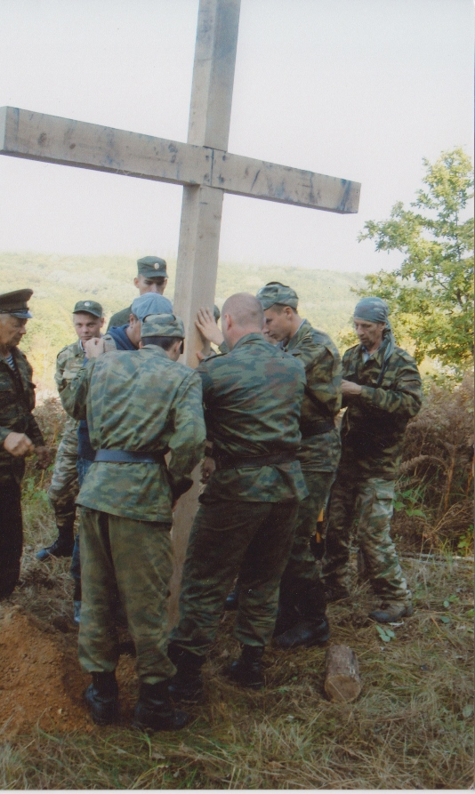
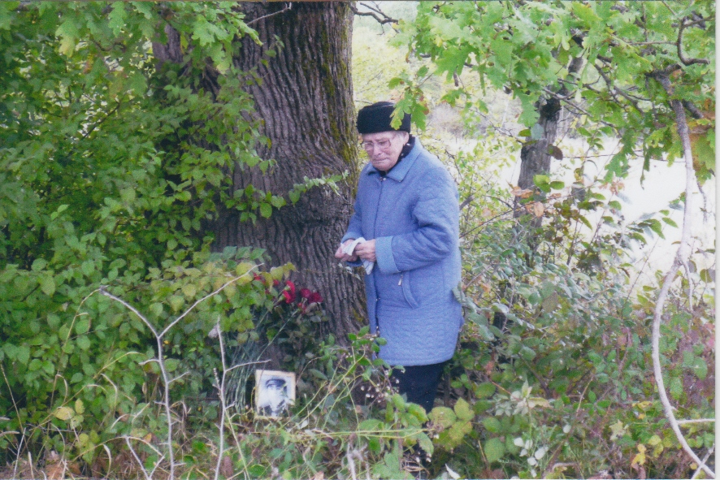

|
Установление места гибели краснофлотца СКОМОРОХОВА С.И. и его боевых товарищей из 83-й ОСБр морской пехоты на высоте 184,1 под ст. Эриванская Краснодарского края стало для нас знаковым событием.
Нужно отметить, что положительного результата в поиске удалось добиться и благодаря исключительной настойчивости и стремления докопаться до истины дочери погибшего тверитянки Некрасовой Тамары Семеновны. Большую помощь в координации наших действий оказывал активный общественник, ветеран военно-морского флота Николай Васильевич Скрипченко.
Об этой истории мы уже писали в газете «Жить и Помнить», выкладывали информацию на сайте Фонда. Предлагаем познакомиться с последним материалом, который прислали кубанцы Тамаре Семеновне.
ДЛЯ ПАМЯТИ ВРЕМЕНИ НЕТ – ОНА БЕСКОНЕЧНА!
Девятого октября, в день освобождения Кубани от немецко-фашистских захватчиков, на высоте 184.1 под ст. Эриванской прошла патриотическая акция «Память».
Место для проведения акции выбрано не случайно. Именно на этой высоте 70 лет назад шли кровопролитные оборонительные бои советских солдат с фашистскими захватчиками. 19 сентября 1942 года противник захватил высоту 184.1. Уж больно стратегически привлекательной была эта точка. Через несколько дней советские войска перешли в контрнаступление. Сегодня известно, что за десять дней боев здесь погибло более 1100 морских пехотинцев 83 морской стрелковой бригады. Но достоверно зафиксированы имена только 29 бойцов, погибших на высоте 7 октября.
Почтить память погибших пехотинцев 70 лет спустя собрались сотрудники музея Абинского района, учащиеся ПУ-30, СОШ № 4, Холмской детской художественной школы, представители военкомата, Абинской музыкальной школы, общественности.
С напутственными словами перед ребятами выступили председатель Абинского отделения общественной организации «Союз советских офицеров» Е. Зуйков и председатель районного комитета солдатских матерей Н. Федоренко.
А после митинга спустились к многолетнему могучему дубу - свидетелю тех событий. Под ним установлен портрет одного из 29 погибших бойцов - С. И. Скоморохова. Портрет прислала из Твери дочь Семена Ивановича Т. Некрасова. После многолетних бесплодных поисков в 2007 году ей удалось, наконец, найти место, где погиб ее отец (о том, как женщина приезжала в Эриванскую почтить память отца, «Восход» уже писал).
Тропинку, ведущую к вековому дубу, расчищали сами участники акции. Под руководством старших ребята убрали от сорной растительности также и поляну, на которой в прошлом году был установлен Поклонный крест в память обо всех погибших здесь советских солдатах.
И, конечно же, живописные виды, которые открываются взору с высоты 184.1, не могли не использовать в своем творчестве воспитанники Холмской школы искусств. Предусмотрительно захватив альбомы, карандаши и краски, ребята расположились на солнечной поляне, чтобы под руководством преподавателя А. Максименко сделать пейзажные наброски.
Сотрудники районного музея, накормили всех желающих горячей сытной кашей и напоили заваренным на костре чаем. Привал, устроенный у подножия высоты, стал достойным завершением ставшей уже традиционной акции.
газета «Восход», 27 октября 2012 г.

Поминальный крест
У векового дуба, на месте гибели отца
Из письма директора Абинского музея мы узнали, что принято решение на высоту 184.1 проложить туристический маршрут. Проект согласован с Краснодаром.
А началом всему стала фронтовая судьба солдата, одного из тех многих сотен тысяч, кто до сего дня «пропавшие без вести».
|